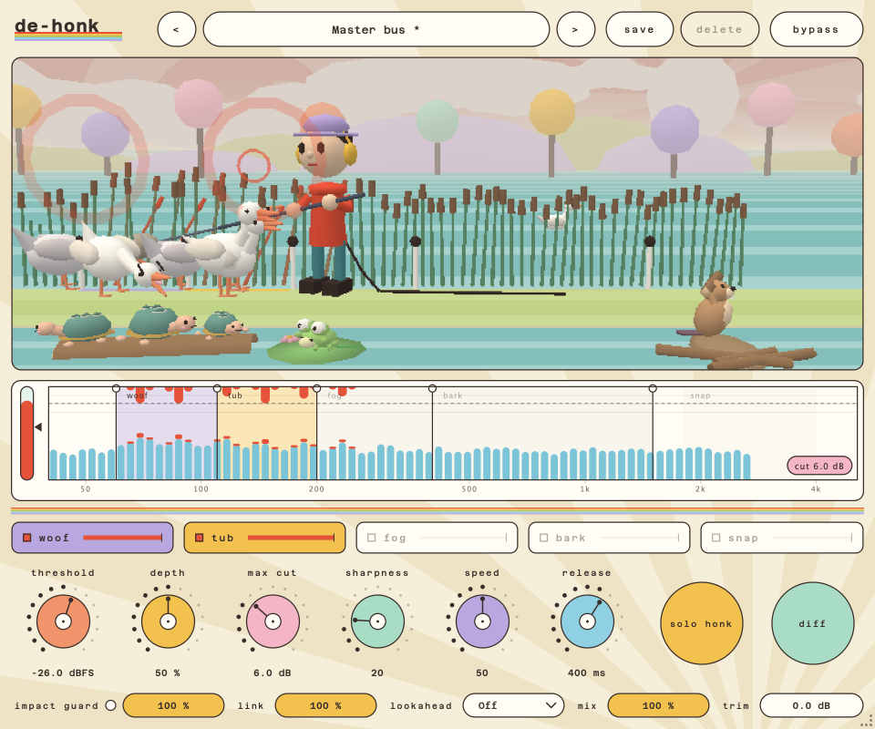
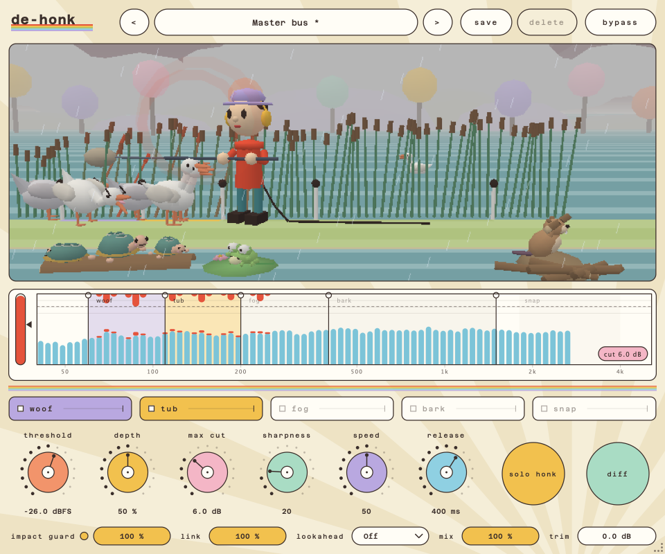
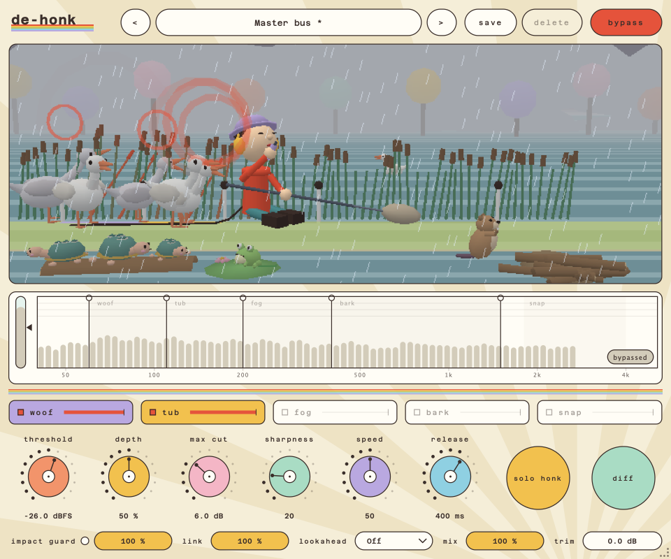

de-honk
Thanks for trying De-Honk. It goes on the master bus of a trailer mix, before the limiter. When lots of the sounds and music in a session have each been through a bass enhancer or a saturator, their added harmonics pile up in the low mids as a boxy, nasal build-up. De-Honk listens for that as the mix plays and takes it down with narrow cuts that come and go with it.
It's meant to be gentle: a few dB at most, mostly in the busy sections. It works in mono, stereo and surround up to 7.1.4, as AAX, VST3 and AU, and as a standalone app.
download
The plug-ins on their own are on the release page.



how it was made
De-Honk was tuned by ear on trailer mixes, with measurements to back up what we heard:
- What causes honk. We measured what bass enhancers actually add (mostly second and third harmonics, roughly 100 to 300 Hz above the bass) and how that piles up when many sounds in a session each have one.
- How it decides. It splits the low mids into narrow bands, one per semitone, and looks for bands that stand out from their neighbours while the mix is loud. It leaves a band alone when there's a real note underneath it, so a note's own pitch is kept and only the harmonics piled on top are reduced.
- Tuning. The settings were set by listening to our own trailer mixes that had a bit of honk, comparing them with De-Honk on and off and soloing what it took out, until it removed the build-up without taking the weight. Mixes signed off by clients don't have much honk, so it's gentle by design.
- Checking it doesn't do harm. It was run over a library of finished trailer mixes, with their dialogue stems and real hits from their effects stems, to check that it keeps the weight of impacts, leaves dialogue alone and doesn't pump or click. There are also 46 automated tests for things like latency, clicks and surround.
- What it can't know. It can't tell low-mid weight you wanted from build-up you didn't. That's a matter of taste, and it's the main thing your listening will tell us. The rules will be adjusted from what you report.
setting up
- Put it on the master, before your limiter, and start with the Master bus preset.
- Lookahead Off (the default) adds no latency, so it's fine on a live mix.
- Set Threshold so the level bar on the left of the band view goes past the marker in the dense sections and stays under it in the quiet ones. It only works above the threshold.
- Leave everything else at default for a first pass.
what it should do
- In the loud, dense parts (big music plus effects), the low mids should open up: less boxy, less honky, the mix feeling less clogged.
- The bass and the weight should stay where they were.
- Quiet passages and dialogue on their own should pass through untouched.
what to listen for, most important first
- Lost weight. Does the bass or the body of the mix get thinner with it on? Use Diff to compare: hold it to hear the untreated mix, or click it to latch.
- Hits. Do explosions, slams and big drum hits keep their punch and their tail? Impact Guard is meant to keep the cuts out of them. If a hit sounds smaller, note the time.
- Rumble and dense textures. It can sometimes cut into noisy low-mid material (rumbles, wind, dense ambiences) as if it were honk. If something thick suddenly sounds hollow, that's what to report.
- Audible working. Can you hear it moving: pumping, a wobble or a ringing in the low mids? Release sets how slowly a cut lets go; longer is steadier.
- Does it actually help? On a mix you know has honk, does it get it? If it isn't doing enough, raise Depth or set Max Cut to 8 or 9 dB. If it's too much, bring Depth down.
listening tools
Plays only what's being removed. It should sound like ugly, boxy low mids. If you hear wanted bass, notes or dialogue in it, it's taking the wrong thing; tell us what and where.
Plays the untreated mix, level-matched, for a quick before and after.
the picture
The pond at the top shows what it's doing, so you can glance at it rather than watch it.
- geeseThe cuts, chased off by the sound recordist.
- turtlesHide in their shells when Impact Guard holds back for a hit.
- frogTenses as a cut nears Max Cut, and leaps off its lily pad when one reaches it.
- beaverIts dam grows while the low mids stay clogged.
- fishJumps when Snap takes out a click.
- recordistSits down with a flask in Bypass.
please send back
- What you used it on: host and version, sample rate, and the layout (stereo, 5.1, 7.1.4 and so on).
- Your settings, if you changed them.
- A short bounce of the same section with De-Honk on and off, with the times where it helped or hurt.
- Anything that glitched: clicks, dropouts, high CPU, the window misbehaving, or Pro Tools refusing to load it.
known in this build
- There's no sidechain input yet.
- Switching Diff on and off very fast can click.
- Settings and presets may change before the full release, so sessions saved with this build may not sound the same in a later one.
de-honk 0.0.1 · a plug-in by samuel justice · sammy j